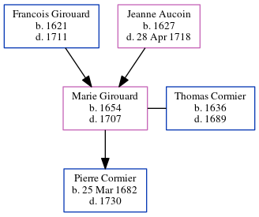

Marie Madeleine Cormier (née Girouard) 1654 - 1707
[ Home ] | [ Calendar ] | [ Surnames Index ] | [ Family History ]The child of Francois Girouard and Jeanne Aucoin, Marie Girouard, the 9 times great-grandmother of Michele Copp (née Phillips), was born in Beaubassin, Acadia, Nova Scotia, Canada in 16541 and married Thomas Cormier (with whom she had 1 child, Pierre) in Beaubassin in 16681.
She died in 1707 in Beaubassin, , New Brunswick, Canada.
Parents
- Francois was born in 1621
- Jeanne was born in 1627
Children
- Pierre was born on Mar 25, 1682
Citations
- U.S. and International Marriage Records, 1560-1900 Online publication - Provo, UT, USA: The Generations Network, Inc., 2004.Original data - This unique collection of records was extracted from a variety of sources including family group sheets and electronic databases. Originally, the information was deriv
Family Tree
Generated by ged2site. Last updated on Jun 24, 2024